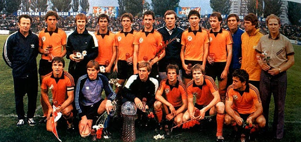

ФК Шахтар (Донецьк) один із найтитулованіших клубів українського футболу, тринадцятиразовий чемпіон України, тринадцятиразовий володар Кубка України, восьмиразовий володар Суперкубку України, володар Кубка УЄФА 2009 року, постійний учасник Ліги чемпіонів УЄФА.
Команда вугільників Донбасу створена згідно з рішенням Всесоюзної ради з фізичної культури та спорту від 3 квітня 1936 року та отримала назву Стахановець. Свій перший офіційний матч команда провела 24 травня 1936 року. У середині 1940-х років Спортивне товариство вугільників Донбасу змінило назву на Шахтар, а починаючи з 1960-х квітами клубу стало традиційне для регіону поєднання помаранчевого та чорного. Домашнім стадіоном Шахтаря є Донбас Арена, що вміщує 52 898 глядачів.
Історія клубу веде відлік із 1936 року. Тоді було сформовано команду вугільників Донбасу, названу на честь новатора шахтарського руху Олексія Стаханова Стахановця. Її кістяк склали гравці горлівського та сталінського Динамо.
Дебютний матч Стахановець провів 12 травня 1936 року у Горлівці з одеським Динамо на першість України серед показових команд. Гірники грали у такому складі: воротар Сергій Роздорожнюк, захисники Михайло Бойченко, Георгій Костянтиновський, півзахисники Павло Євтехов, Костянтин Пащенко, Беспалов, нападники Адам Кородинський, Михайло Пащенко, Микола Наумов, Федір Манов, Борис Терентьєв. Перший гол записав до свого активу Михайло Пащенко, а зустріч завершилася з рахунком 3:2 на користь гостей.
У чемпіонатах СРСР Стахановець дебютував 24 травня 1936 року матчем у рамках групи В у Казані, де поступився місцевому Динамо з рахунком 1:4 (перший м'яч за команду гірників провів Федір Манов).
1938 року Стахановець отримав право представляти Донбас у групі найсильніших. Команда посилилася найкращими футболістами краю і протягом трьох років посідала 1112 місця. За підсумками сезону 1940 року високе спортивне звання майстра спорту було присвоєно гравцям команди Миколі Кузнєцову, Миколі Кононенко, Георгію Мазанову, Георгію Бікезіну, Григорію Балабі та Антону Яковлєву.
У червні 1941 року розпочалася Велика Вітчизняна війна. Багато футболістів Стахановця пішли на фронт чи працювали на оборонних підприємствах. У битвах загинули Іван Устинов, Іван Путятов, Іван Горобець, Михайло Васін та інші.
8 вересня 1943 року Сталіно було звільнено. Через два місяці у місті відбувся перший післявоєнний матч.
У 1945 році Стахановець був включений до другої групи першості СРСР. Команда була практично наново укомплектована. Склад із досвідченими Миколою Кузнєцовим, Георгієм Бікезіним та Петром Юрченком поповнили Олег Жуков, Валентин Лівенцев, Євген Шпіньов, Микола Ансімов, Костянтин Скрипченко, Василь Брюшин, Олександр Андренко.
Читати далі...Бути послом українського футболу у світі та міжнародного футболу – в Україні, таким чином розвиваючи футбольну культуру у нашій країні.
Встановлювати нові межі та стандарти досконалості у футболі.
Ми віримо, що молодість – це універсальне джерело змін, амбіцій та здобутків. Ми віримо, що молодість – це час, коли талант та здібності виявляються найяскравіше. Саме тому ми даємо можливість нашим гравцям та учням Академії повністю реалізувати себе у футболі та в житті. Ми віримо в молодість нашої країни, її зростаючий потенціал і ту роль, яку може зіграти футбол як сила, що об'єднує, щира і пристрасна.
Наша історія – частина нас, як і наше майбутнє: ми вірні тому, ким ми були, і тому, ким ми хочемо бути. Ми віддані тим людям, які вірять у нас – нашим уболівальникам.
Вболівальники – ключовий орієнтир, суть, ціль та найвищий зміст нашого існування. Заради них команда виходить на поле. Заради них прагне перемагати у кожному матчі, у кожному турнірі. ФК «Шахтар» високо цінує та дорожить кожним своїм уболівальником.
Ми не боїмося мислити масштабно. Те, що інші тільки мріють, ми ставимо собі за мету. Ми завжди боремося до кінця. Командний дух веде нас до перемоги. Ми не зупиняємось на досягнутому, а встановлюємо собі нові, ще більш амбітні цілі.
Логотип, розроблений компанією Interbrand, універсальний і водночас багатозначний. Назва команди в центрі емблеми говорить про історичний зв'язок клубу із шахтарською професією. Контраст помаранчевого та чорного кольорів символізує світло сонця та темряву вугільних шахт.
У самому логотипі тісно переплелися минуле та майбутнє «Шахтаря»: рік заснування та схрещені молотки – наша данина історії та традиціям клубу, важкій шахтарській праці, полум'я у верхній частині емблеми – це не лише енергія природи, заточена глибоко в серці Донбасу, а й пристрасна , щира любов до клубу, властива нашим уболівальникам
Верхня частина емблеми – це ще й національний символ України тризуб. Так клуб висловлює своє бажання бути не лише регіональним символом, а й гордістю країни. Також тут укладено і наш ініціал – літера Ш, вписана в контури штольні.
Крім того, верхня частина емблеми відображає залитий сонцем обрій – світанок нової ери «Шахтаря».
Загальні контури емблеми, які самі по собі є новаторськими в індустрії футболу, виражають амбітність клубу та чітке розуміння поставленої мети. Гострокінцева, агресивна форма також уособлює відомий бійцівський характер команди «Шахтар».
| № | Команда | І | В | Н | П | З | П | О |
|---|---|---|---|---|---|---|---|---|
| 1 | Реал Мадрид | 4 | 3 | 1 | 0 | 8 | 2 | 10 |
| 2 | Лейпціг | 4 | 2 | 0 | 2 | 6 | 7 | 6 |
| 3 | Шахтар | 4 | 1 | 2 | 1 | 7 | 5 | 5 |
| 4 | Селтік | 4 | 0 | 1 | 3 | 2 | 9 | 1 |